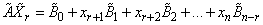
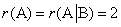
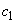

3.5. Схема отыскания общего решения системы m уравнений с n неизвестными
- Находим ранги матриц
 и
.
и
.
Если , то система не
имеет решений.
Если , то у системы есть
решения. У матриц и есть
общий базисный минор. Выбираем его.
и есть
общий базисный минор. Выбираем его.- Оставляем в системе только те уравнения, коэффициенты которых входят в общий базисный минор. Остальные уравнения являются линейными комбинациями этих уравнений и не несут дополнительной информации.
- Сравниваем ранг и количество неизвестных.
Если  , то есть порядок
базисного минора совпадает с количеством неизвестных, решаем систему
, то есть порядок
базисного минора совпадает с количеством неизвестных, решаем систему  уравнений с неизвестными
(ее определитель
уравнений с неизвестными
(ее определитель  ) и получаем единственное
решение.
) и получаем единственное
решение.
, то есть порядок
базисного минора совпадает с количеством неизвестных, решаем систему уравнений с неизвестными
(ее определитель ) и получаем единственное
решение.Если  , то в системе
имеются свободных неизвестных. Тогда – базисные неизвестные, а
, то в системе
имеются свободных неизвестных. Тогда – базисные неизвестные, а  – свободные неизвестные.
– свободные неизвестные.
, то в системе
имеются свободных неизвестных. Тогда – базисные неизвестные, а – свободные неизвестные.Переносим свободные неизвестные в правую часть уравнений
системы:
(3)
или, в матричной форме,
(4)
где
, ,
.
Система (3) является следствием исходной системы (1) и ее
решение может быть найдено любым ранее рассмотренным способом.
Пусть свободные неизвестные принимают значения
.
Тогда система (4) принимает вид:
(5)
и базисные неизвестные выражаются
определенным образом через эти значения:
,  .
.
.Решение неоднородной системы  можно
записать в виде матрицы-столбца:
можно
записать в виде матрицы-столбца:
можно
записать в виде матрицы-столбца:(6)
Поскольку свободные неизвестные могут принимать
произвольные числовые значения, то исходная система имеет бесконечно много решений.
Выражение (6) называется общим решением системы
(1). Если константам придать конкретные
значения, то получим частное решение системы (1).
Решить систему:
Рассмотрим расширенную матрицу:
.
Следовательно,  и . Поскольку ,
система несовместна. Очевидно, что третье уравнение преобразованной системы: не имеет решений.
и . Поскольку ,
система несовместна. Очевидно, что третье уравнение преобразованной системы: не имеет решений.
и . Поскольку ,
система несовместна. Очевидно, что третье уравнение преобразованной системы: не имеет решений.Решить систему
Рассмотрим расширенную матрицу:

Следовательно, , поэтому система
совместна и имеет единственное решение.
Преобразованная система имеет вид:
ее решение:
.
Решить систему
Рассмотрим расширенную матрицу:
.
Следовательно, , поэтому система
совместна и не определена.
Выберем  и
и  в качестве базисных неизвестных и
запишем преобразованную систему:
в качестве базисных неизвестных и
запишем преобразованную систему:
и в качестве базисных неизвестных и
запишем преобразованную систему:
Полагая , , где  и
 -
произвольные числа, получаем общее решение системы
-
произвольные числа, получаем общее решение системы
-
произвольные числа, получаем общее решение системы.
Решение соответствующей однородной системы
можно записать в виде:
.